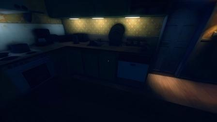
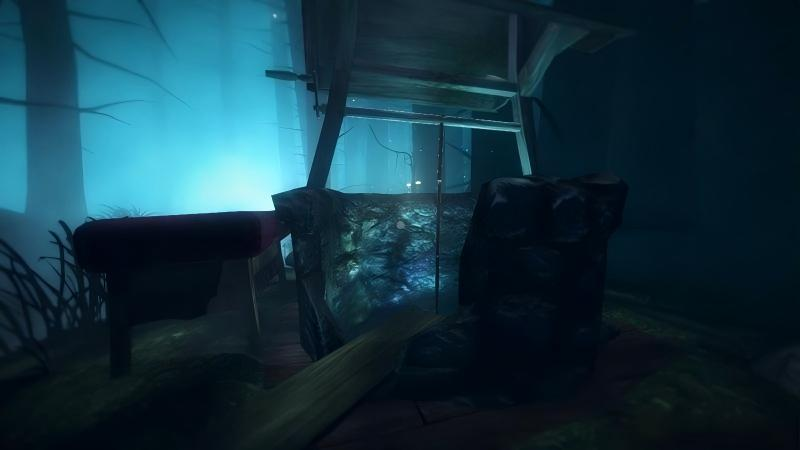
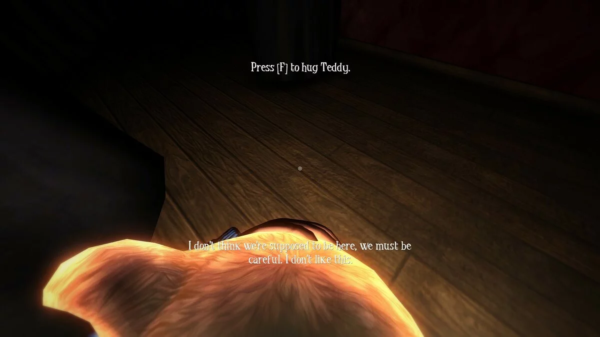

The Kitchen
Entering the Kitchen
The nursery door closes behind you with a soft but definitive click, and the hallway stretches ahead — a narrow throat of darkness that deposits you directly into the kitchen. If Chapter 1 was the tutorial wrapped in atmosphere, Chapter 2 is where Among the Sleep begins to show its teeth. The kitchen is enormous from a toddler's perspective: countertops loom like cliffs, cabinet doors tower overhead like the gates of some ancient temple, and a single overturned wooden chair lies on its side near the center of the room, frozen mid-fall.
Take a moment to absorb the environment. The kitchen is illuminated by a sickly yellow light — the kind that hums at a frequency just low enough to feel in your chest. Shadows pool in the corners, thicker than they should be, and somewhere in the distance you can hear a sound that doesn't belong: a low, rhythmic dragging noise, like something heavy being pulled across the floor upstairs. You can't reach upstairs. But the sound knows you can hear it.

Initial Exploration
Before you tackle the main puzzle, do a lap of the kitchen. This serves two purposes: it builds your mental map of the space, and it triggers several environmental storytelling moments that are easy to miss if you rush. Here's what you'll encounter:
- The Refrigerator — Towering on the far wall. Its door is slightly ajar, and a thin ribbon of cold air curls out from the gap. You can push it open further, but the interior is dark and empty — or at least, it looks empty. The hum the fridge emits shifts in pitch as you approach. Unsettling, but safe.
- The Kitchen Table — Massive, four-legged, with a tablecloth that drapes nearly to the floor. The space under the table is important: it's your first hiding spot. Crawl beneath it (remember the crouch mechanic from Chapter 1 — Ctrl on PC) and you'll notice the audio muffles slightly. This is the game teaching you that small spaces offer safety. Store this lesson. You will need it.
- The Countertop — Running along the left wall. On top of the counter, just barely visible from the floor, sits a cabinet key and what appears to be a child's sippy cup. You can't reach the counter from the floor. This is your puzzle.
- The Pantry Door — A narrow door near the back of the kitchen. It's locked. Behind it, you can hear something — not movement, exactly, but a kind of breathing that doesn't sound human. The door rattles in its frame once, twice, then falls still. Walk away. It won't open... yet.
You'll notice immediately that Chapter 2 feels different from the nursery. The color palette has shifted from muted warmth to jaundiced yellow. The ambient audio has layers now — distant creaks, the refrigerator's electric drone, and that dragging sound from somewhere above. Krillbite is turning the dial slowly. Nothing will attack you in this chapter, but something is wrong, and the game wants you to feel it in your bones before it ever shows you why.
The Stacked Chairs Puzzle
This is the central puzzle of Chapter 2, and it's significantly more involved than the single-chair push from the nursery. The goal is straightforward: reach the countertop to grab the cabinet key. The challenge is that you're about two feet tall and the counter is roughly four times your height. You're going to need to build a staircase out of kitchen chairs — and there are exactly enough chairs in the room to make it work.

Step-by-Step Solution
- Locate all three chairs. There are exactly three wooden chairs in the kitchen. The first is the overturned one in the center of the room — that's Chair A. The second is pushed against the far wall near the refrigerator — Chair B. The third is tucked into a shadowy corner behind the kitchen table — Chair C. Walk around the perimeter and you'll spot all of them.
- Right Chair A (the overturned one). Approach it and interact to flip it upright. This is the game showing you that chairs can be manipulated. Push Chair A toward the counter — specifically, toward the area directly below where the key sits on the countertop. You don't need surgical precision, just get it close.
- Push Chair B to the counter. Chair B is upright already. Walk into it to push it across the floor. The physics here are slightly more resistant than they were in Chapter 1 — the kitchen floor has more friction, and the chair is heavier. Push steadily, and don't get frustrated if it takes a few extra seconds to line up. Position Chair B next to Chair A, not on top of it.
- Push Chair C to complete the stack base. This is the trickiest chair to maneuver because it starts in the dark corner. If you're struggling to see, hug Teddy — his glow will illuminate the area. Push Chair C alongside Chairs A and B so that you have three chairs clustered below the counter, forming a rough triangular platform.
- Climb onto the first chair. Approach Chair A from the front and the climbing animation will trigger. You're now standing on the seat of Chair A, roughly double your original height.
- Climb from the first chair onto the second. From Chair A, look toward Chair B. Move toward it, and a second climbing animation will trigger, lifting you onto the higher chair. The perspective shift here is genuinely dizzying — you'll feel the height.
- Reach for the counter. From the highest chair, look up toward the counter edge. An interaction prompt will appear. Grab the ledge, and the toddler will pull themselves onto the countertop with a strained little grunt that is equal parts adorable and harrowing. You're up. The key and the sippy cup are right in front of you.
If you push the chairs in the wrong order or cluster them too tightly, the climbing prompts may not chain correctly. The game reads the chairs as a sequence of platforms — if one chair is too far from the next, the climb won't trigger. Aim for the chairs to be touching (or nearly touching). If the second climb doesn't activate, try repositioning the chairs so they're closer together. You can always push them again.
While you're up on the counter, grab the sippy cup in addition to the key. It's not required to progress, but interacting with it triggers a fleeting memory fragment — a woman's voice, distant and warm, singing the same lullaby from the music box in Chapter 1. It's a small moment, but it adds crucial emotional context to the story. The sippy cup disappears from your inventory after the memory plays, so don't worry about carrying it around.
Navigating Through the Darkness
Key acquired. But the kitchen isn't done with you. The moment you climb down from the counter (the game provides a safe dismount animation — just walk toward the edge), the ambient lighting shifts. The sickly yellow bulb overhead flickers once, twice, and then dies. The kitchen plunges into near-total darkness, lit only by the pale sliver of light leaking under the pantry door and the soft golden glow of Teddy in your arms.

This is the game's first genuine darkness sequence, and it's a masterclass in tension through limitation. Your field of view shrinks to whatever Teddy can illuminate — roughly a three-foot radius around the toddler. Everything beyond that circle is pure black. The dragging sound from upstairs has stopped. In its place: footsteps. Slow, deliberate, heavy footsteps, moving across the ceiling above you. Then silence. Then a sound much closer — something sliding across the kitchen floor, just beyond Teddy's light.
How to Navigate Safely
- Hug Teddy. Do not let go. This is not a suggestion. If you release Teddy, the light cuts out almost entirely, and the footsteps grow louder. The game is training you: Teddy equals safety. Internalize this now, because in later chapters, letting go of Teddy at the wrong moment carries real consequences.
- Move slowly. The darkness disorients. Your natural instinct will be to rush toward the exit, but rushing in the dark makes it easy to get turned around. Walk deliberately. Use the faint light under the pantry door as a reference point — it's your North Star in this room.
- Ignore the shadow. As you move through the dark kitchen, you may glimpse something at the edge of Teddy's light — a tall, slender shape that doesn't resolve into anything recognizable. It's there, and then it isn't. This is a scripted vision, not an enemy. You cannot interact with it, and it cannot hurt you. It's the game planting the seed of what's to come. Acknowledge it, shudder, and keep moving.
- Head toward the cabinet. The locked cabinet is on the wall opposite the counter — near where the pantry door is. Use the key on the cabinet door to unlock it. Inside, you'll find another corridor — a narrow passage that leads out of the kitchen and into the next area.
The tall, slender shape you glimpse in the dark is not a threat in Chapter 2 — it's a scripted apparition that vanishes when approached. However, this entity will become an active threat in Chapters 3 and 4. The game is introducing it slowly, letting you build a relationship with the fear before it asks you to engage with it mechanically. Pay attention to how the shadow moves (it favors the edges of rooms and avoids direct confrontation in this chapter) — that pattern will help you later.
When the lights are out, the game shifts heavily toward audio-based navigation. The refrigerator's hum, the creak of floorboards under your own feet, and the distant footsteps all have distinct spatial positioning. If you're playing with headphones (which we strongly recommend for this game), you can literally hear which direction the cabinet is in by rotating the camera and listening for the hum of the fridge — it's loudest when you're facing the right direction.
Finding the Exit
Once the cabinet is unlocked, a narrow passageway opens before you. It's not quite a hallway — more of a crawlspace carved between the back of the cabinets and the wall, the kind of interstitial space that shouldn't exist in a normal house but feels perfectly natural in the dreamlike architecture of Among the Sleep. The walls here are close. The ceiling is low. The toddler fits, but only just.
Follow the passage. It's linear — you can't get lost. After about twenty seconds of crawling forward, the passage opens into a wider space: the dining room vestibule. A grandfather clock ticks against the wall. A dining table, draped in a long white cloth, dominates the center of the room. And directly ahead, a doorway leads onward into the living room. But before you cross that threshold, there's one more thing to do.
Chapter 2 ends the moment you pass through the doorway into the living room. Make sure you've grabbed the collectible before you proceed — once you leave the kitchen/dining area, you can't come back without restarting the chapter.
Hidden Collectible — Kitchen Drawing
Chapter 2 contains one hidden collectible drawing, and it's one of the easiest to miss in the entire game because it's hidden in a place most players never think to look. The collectible is not in the kitchen proper — it's in the dining room vestibule, the transitional space you enter after crawling through the cabinet passage.
Location: Behind the Dining Room Cabinet
In the dining room vestibule, there's a tall wooden cabinet similar to the one from the nursery — but this one is pushed slightly away from the wall. If you look at the gap between the cabinet and the wall, you'll see it's just wide enough for a toddler to squeeze through. Crouch (Ctrl) and slide into the gap.
Behind the cabinet, against the wall, is a child's drawing taped at floor level. The image depicts a kitchen — recognizable by the crude rendering of a stove and a table — but the drawing has been scribbled over with heavy black crayon marks. A figure stands in the corner of the drawing, too tall and too dark to be friendly. Collect it.
Most players are so relieved to escape the dark kitchen that they sprint through the dining room vestibule and into Chapter 3 without ever glancing behind the cabinet. The gap is shadowed and easy to overlook, especially if you're still shaken from the darkness sequence. If you've already passed this point without grabbing the drawing, you'll need to replay the chapter. It's worth it — this drawing contains one of the more disturbing images in the collectible set, and it contributes directly to the secret ending.
Tips & Notes
Chapter 2 is where Among the Sleep starts to reveal its true nature. Here are the key takeaways to carry forward:
- Hiding is a mechanic now. You learned to crawl under the table and into the gap behind the cabinet. These are not optional discoveries — the game is teaching you that small spaces are safe spaces. In Chapter 3, this becomes a survival mechanic. Practice crouching and navigating tight spaces now while the stakes are low.
- The shadow is real. That tall, slender shape you glimpsed in the darkness? It's not a hallucination, and it's not going away. The game has been remarkably gentle so far — no chase sequences, no fail states. That changes in the next chapter. Mentally prepare yourself.
- Stacking puzzles scale up. The three-chair stack was the game's way of introducing multi-step environmental puzzles. Future chapters will ask you to manipulate more objects in more complex configurations. The core logic — observe the environment, identify movable objects, test their interactions — is the same every time. If you solved the chairs, you can solve what's coming.
- Chapter 2 is a bridge. It sits between the gentle tutorial of the nursery and the genuine horror of the living room. Appreciate it for what it is: a masterfully paced escalation that respects your nerves while still testing them.
The mobile version of Among the Sleep handles Chapter 2 with a few notable differences from PC and console:
- Chair pushing on touchscreens uses a virtual joystick combined with a "push" toggle button (located near the hug button). The push sensitivity on mobile is slightly higher than on PC, meaning chairs slide faster. Take it slow — over-pushing chairs is the most common mobile-specific frustration in this chapter.
- The darkness sequence on OLED screens is genuinely impressive. On iPhone 14 Pro and later models, the pitch-black sections of the kitchen use true black pixels, making Teddy's glow feel almost tangible. However, this also means the shadow apparition is harder to see on some OLED displays — you may only catch it in your peripheral vision, which is arguably more effective.
- Battery warning: the prolonged darkness sections with Teddy's dynamic light source can drain battery faster than other chapters, especially on Android devices. If you're playing untethered, consider lowering your brightness slightly for this chapter to conserve power.